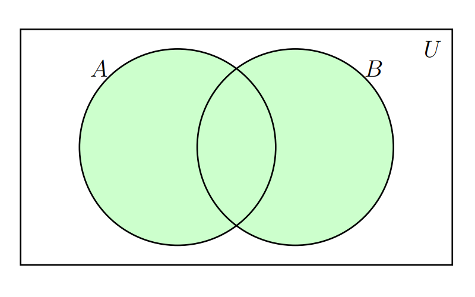
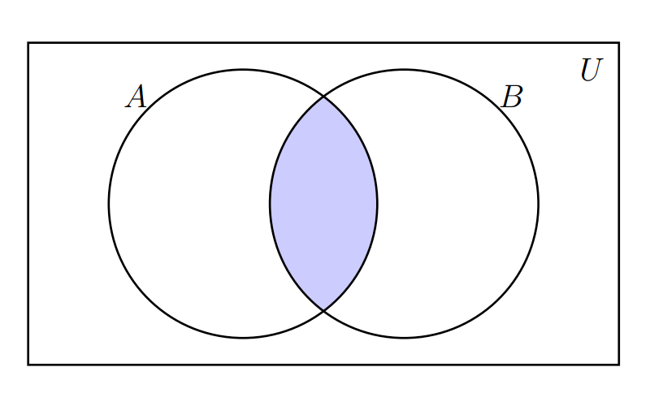
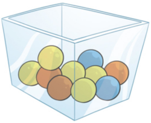

Teoría de conjuntos y técnicas de conteo
Módulo 0- Unidad 0.2
dgonzalez
Guía 0.2
Teoría de conjuntos
1. Introducción
A continuación se relacionan las principales características de los conjuntos y sus principales relaciones. Estos conceptos serán importante en el momento de abordar los conceptos básicos de probabilidad que serán expuestos en el Modulo 2.
En pesaremos con su definición
2. Definición de conjunto
Un conjunto es una colección de objetos que se denota con una letra mayúscula (comúnmente las primeras letras del alfabeto A,B,C..) .
Se pueden escribir por:
por extensión : \(A=\{0,1,2,3,4,5,6,7,8,9\}\), escribiendo todos los elementos que lo conforman.
por su nombre : los dígitos
por compresión : \(A=\{ x\in\mathbb{Z}, 0\le x \le 9 \}\), utilizando nomenclatura matemática.
Al comparar o combinar conjuntos debemos hacer uso de sus propiedades y operaciones, dentro de las cuales se encuentran \(A \cup B\), \(A \cap B\),
3. Unión del conjunto
Unión del \(A\) con el conjunto \(B\). \(A \cup B\), \(\overline{A}\) ,\(A - B\), entre otras. La zona sombreada en la siguiente figura representa estas operación

Ejemplo: Supongamos los siguientes conjuntos :
- \(A = \{a,e,i,o,u \}\)
- \(B = \{1,2,3,4,5,6,7,8,9,0\}\)
\(A \cup B \{a,e,i,o,u, 1,2,3,4,5,6,7,8,9,0 \}\)
4. Intersección
La intersección entre el conjunto \(A\) y el \(B\) se denota por : \(A \cap B\) y se representa por la siguiente zona sombreada

Ejemplo: Supongamos los siguientes conjuntos :
- \(A = \{1,2,3,4,5,6 \}\)
- \(B = \{2,4,6,8,10,12,14,16,18,20 \}\)
\(A \cap B = \{ 2,4,6 \}\)
4. Complemento
El complemento del conjunto \(A\) se escribe como: \(\overline{A}\) y se representa por la siguiente zona sombreada

5. Resta
La resta del conjunto \(B\) menos el conjunto \(A\) : \(B-A\) , está representada por la zona sombreada en la siguiente figura

Ejemplo: Supongamos los siguientes conjuntos :
- \(A = \{1,2,3,4,5,6 \}\)
- \(B = \{2,4,6,8,10,12,14,16,18,20 \}\)
\(B-A =\{ 8,10,12,14,16,18,20 \}\)
6. Problemas propuestos
- Lanzamiento de un dado: Un experimento consiste en lanzar un dado. Algunos eventos que se pueden definir a partir del experimento pueden ser:
- A : observar un 2
- B : observar un número par
- C : observar un número mayor que 2
- D : observar \(A\) y \(B\)
- E : observar \(A\) o \(B\) o ambos
- F : observar \(A\) y \(C\)
- Liste los eventos simples del espacio muestral
- Liste los eventos de cada uno de los eventos \(A\) a \(F\)
- Calcule la probabilidad de los seis eventos de \(A\) hasta \(F\)
- En cada caso representelos en un diagrama de Venn
- Lanzamiento de monedas :Calcule la probabilidad de sacar más de una cara en el lanzamiento de una moneda tres veces. Utilice un diagrama de árbol para realizar el calculo.
- Eventos equiprobables :Un experimento da como resultado uno de cinco eventos simples equiprobables : \(E_{1}, E_{2}, E_{3}, E_{4}, E_{5}\). A partir de ellos se definen los sigueintes eventos:
- A: \(E_{1},E_{3}\)
- B: \(E_{1},E_{2},E_{4},E_{5}\)
- C: \(E_{3},E_{4}\)
- \(P(A)=0.4\)
- \(P(B)=0.8\)
- \(P(C)=0.4\)
Encuentre a las probabilidades asociadas a estos eventos compuestos listando los eventos simples de cada uno:
- \(A^{c}\)
- \(A\cap B\)
- \(\overline{A} \cup C\)
- \(A\cup B\)
- \(B\cap C\)
- \(A\cup B\cup C\)
- \((A\cap \overline{B})\)
- Un estudio sobre la conducta realizado a 1000 delincuentes adictos a las drogas hace pensar que la probabilidad de una condena de dos años después de un tratamiento podría depender del nivel de educación del delincuente. Las proporciones del número total de casos que caen en cuatro categorías de educación y condena que se muestra a continuación:
| Condiciones dos años | después del tratamiento | |
|---|---|---|
| Educación | Condenado | No condenado |
| 10 años o más | 100 | 300 |
| 9 años o menos | 270 | 330 |
Se definen los siguientes eventos de interés: A : El delincuente tiene 10 años de educación o más B : El delincuente es condenado dos años después de completar el tratamiento
Suponga que se selecciona un delincuente del programa de tratamiento. Encuentre la probabilidad de que:
- \(A\)
- \(A \cup B\)
- \((A \cap \overline{B})\)
- \(\overline{A} \cup \overline{B}\)
- Suponga que cierta enfermedad está presente en 10 por ciento de la población y que hay una prueba diseñada para detectarla. La prueba no siempre funciona de modo perfecto. Algunas veces la prueba es negativa cuando la enfermedad está presente, y otras positivas cuando no hay la enfermedad. En la siguiente tabla se muestra los resultados obtenidos en un estudio realizado:
| La prueba es positiva (\(P\)) | La prueba es negativa (\(N\)) | |
| La enfermedad está presente (\(D\)) | 0.08 | 0.22 |
| La enfermedad está ausente (\(\overline{D}\)) | 0.05 | 0.65 |
A partir de esta información construya por lo menos tres eventos simples y tres eventos compuestos. En cada caso determine su probabilidad
- En un experimento sobre preferencia de colores en los niños, se colocan quince juguetes en un recipiente. Los juguetes son idénticos excepto por el color. Seis son rojos, cuatro son blancos y cinco son azules. Se le pide a un niño elegir un juguete al azar ¿cuál es la probabilidad de que el niño elija el rojo?. ¿cuál de que sea el blanco? ¿cuál el que sea el azul?. ¿que no sea rojo ? ¿que no sea rojo ni azul?
Ejercicios tomados de Introducción a la Probabilidad y Estadística, Mendenhall-Bearver-Beaver. Editorial Thomson (2008)
Técnicas de conteo
Las técnicas de conteo constituyen una serie de estrategias que permiten a través de reglas establecer el numero de elementos de un conjunto finito.
Inicialmente empezaremos por definir dos reglas:
1. Principio de la adicción
Supongamos que un procedimiento, designado con \(P_1\), se puede hacer de \(n_1\) manera diferentes. Supongamos que un segundo procedimiento \(P_2\) se puede realizar de \(n_2\) maneras diferentes. Ademas suponga que los dos procedimientos no se pueden realizar juntos. Entonces el numero de formas diferentes como se puede realizar el procedimiento \(P_1\) o el procedimiento \(P_2\) es de \(n_1 + n_2\) maneras diferentes.
Ejemplo
Un estudiante tiene dos posibilidades de ir de su casa a la universidad: En transporte público o en transporte particular. Para el caso del transporte público existen 5 alternativas. Para el caso de transporte particular tienen 6 alternativas. En este caso \(n_{1}=5\) y \(n_{2}=6\). El número de maneras como se puede transportar de la casa a la universidad será \(n=n_{1}+n_{2}=11\) formas diferentes de ir a la U.\

2. Principio de la multiplicación
Supongamos que un procedimiento \(P1\) , se puede realizar de \(n_1\) maneras diferentes y que otro procedimiento \(P2\) se puede realizar de \(n_2\) maneras diferentes, Ahora supongamos que la manera de realizar los procedimientos es uno después del otro. Entonces el numero de formas diferentes como se pueden realizar los procedimientos \(P1\) y \(P2\) de manera consecutiva es \(n1*n2\) formas diferentes.
Ejemplo:
En el proceso de fabricación de una silla se diferencian las siguientes etapas: El diseño de la silla (\(P_{1}\)) y el proceso de pintado (\(P_{2}\)). El proceso \(P_{1}\) se puede realizar de 3 formas diferentes. Para el proceso \(P_{2}\) se puede optar por 4 formas diferentes. El número de posibles formas como puede fabricar una silla será: \(n_{1} \times n_{2} = 3 \times 4 = 14\)

3. Otras técnicas de conteo
Para explicar un poco los otros casos de conteo utilizaremos el siguiente experimento aleatorio:
Se tiene una urna que contiene \(n\) elementos todos numerables ( se pueden contar) y de ellos se quiere seleccionar \(k\) elementos como se muestra en la siguiente figura.

Este procedimiento se puede realizar de varias formas:
A. Importando el orden
\(\mathcal{P}'(n,k)\) Con repetición o también llanada con sustitución
\(\mathcal{P}(n,k)\) Sin repetición o sin sustitución
B. Sin importar el orden
\(\mathcal{C}'(n,k)\) Con repetición o también llanada con sustitución
\(\mathcal{C}(n,k)\) Sin repetición o sin sustitución
Es decir que se definen los siguientes procedimientos:
A1 : \(\mathcal{P}'(n,k)\): Conjunto formado por todas las manera posible como se puede seleccionar una muestra de tamaño k de una urna que contiene n elementos importando el orden, con sustitución. En este procedimiento se hace diferencia de la posición que tienen los elementos al ser seleccionados y también que después de la extracción de un elemento, este se regresa a la urna antes de la siguiente selección. Esto implica que hay siempre en la urna n elementos antes de la cada selección.
A2 : \(\mathcal{P}(n,k)\): Conjunto de todas la formas posibles como se puede seleccionar una muestra de tamaño k de una urna que contiene n elementos importando el orden, sin sustitución. En este caso los elementos que son seleccionados van quedando por fuera de la urna y no participan en la siguiente selección.
B1 : \(\mathcal{C}'(n,k)\): Conjunto de todas las maneras posible como se puede seleccionar una muestra de tamaño k de una urna que contiene n elementos sin importar el orden pero con sustitución. En esta caso no tiene importancia el orden en que se seleccionan los elementos de la urna, pero los elementos seleccionados regresan a la urna y podrían se seleccionados nuevamente.
B2 : \(\mathcal{C}(n,k)\): Conjunto de todas las formas posibles como se puede selecciona una muestra de tamaño k de una urna que contiene n elementos, sin importar el orden, pero en este caso los elementos seleccionados previamente son excluidos de la siguiente selección.
Contemplados estos casos vamos a definir la forma en que se pueden contar los conjuntos anteriores
Importa el orden con sustitución
\[\mathcal{P}(n,k) = n \times n \times n ........ n = n^k\]
El numero de maneras diferentes como se puede extraer una muestra de tamaño k de una urna que contiene n elementos importando el orden y con sustitucion es: \(n^{k}\)
Importa el orden sin sustitución
\[\mathcal{P}(n,k) = n \times ()n-1) \times (n-2) ........ (n-k) = \dfrac{n!}{(n-k)!}\]
El numero de maneras diferentes como se puede extraer una muestra de tamaño k de una urna que contiene n elementos importando el orden y sin sustitución es: \(\dfrac{n!}{(n-k)!}\), el cual se lee n permutado con k.
Ejemplo
Un Ingeniero debe realizar visitas a 6 aéreas de trabajo diferentes durante el día. A fin de impedir a los funcionarios que sepan cuando realizara su visita, varía el orden de sus visitas. De cuantas maneras puede hacerlo?
\[ _{6}\mathcal{P}_{6} = \dfrac{6!}{(6-6)!}=6! =720\]
No importa el orden sin sustitución
\[\mathcal{C}(n,k) = \dfrac{n!}{(n-k)! k!}= \binom{n}{k}\]
El número de maneras diferentes como se puede extraer una muestra de tamaño k de una urna que contiene n elementos importando el orden y sin sustitución es: \(\binom{n}{k}\), el cual se lee n combinado con k
Ejemplo
El juego del Baloto está conformado por una urna que contiene 45 bolas numeradas del 1 al 46, de las cueles se eligen 6 sin importar el orden y sin que ninguna de las bolas se repita. Este experimento cumple con las condiciones de una combinación. El número de formas diferentes como se puede salir el resultado del Baloto será:
\[_{45}\mathcal{C}_{6} = \binom{45}{6}=8'145,060\]
No importa el orden con sustitución
\[n(\mathcal{C}(n,k)) = \binom{n+k-1}{k}\]
El numero de maneras diferentes como se puede extraer una muestra de tamaño k de una urna que contiene n elementos importando el orden y sin sustitución
4. Problemas propuestos
- Cuántos números de 4 dígitos se pueden formar con los números 0,1,2,3,4,5,6,7?
- Cuántos de los anteriores números son impares?
- Cuántos son mayores o iguales a 1420?
- ¿Cuántas placas para automóvil pueden ser diseñadas si deben contener tres letras (mayúsculas) seguidas de tres dígitos?
- Si es posible repetir letras y números.
- No es posible repetir letras y números.
- Cuántas de las placas diseñadas en el punto (b) empiezan por la letra K y termina en cero,
- Cuantas de las placas diseñadas en el inciso (a) empiezan por la letra K seguida de la L.
- ¿Cuántos números para telefónicos móviles son posible diseñar, si una de las líneas debe constar de siete dígitos?,
- Considere que todos los números empiezan con 300.
- El número empieza por 312 y no es posible repetir dígitos.
- ¿Cuántos de los números telefónicos del inciso (b) terminan en siete?.
- ¿Cuántos de los números telefónicos del inciso (b) forman un número impar?.
- ¿Cuántas maneras diferentes hay de asignar las posiciones de salida de 8 autos que participan en una carrera de fórmula uno? (Considere que las posiciones de salida de los autos. participantes en la carrera son dadas totalmente al azar), ¿Cuántas maneras diferentes hay de asignar los primeros tres premios de esta carrera de fórmula uno?
- En la configuración de un sistema de computo, para que la empresa lo use en su departamento de control de calidad, un ingeniero tiene cuatro opciones de computadora: IVM, VAX, QELL, o PH. Seis las marcas de monitores: M1 M2 M3 M4 M5 M6 y tres los tipos de impresoras gráficas: P1 P2 P3.
- Si todo el equipo es compatible, ¿en cuántas formas puede diseñarse el sistema?
- Si el ingeniero necesita usar un paquete de software estadístico que está disponible sólo par equipos IVM o QELL, ¿De cuantas maneras puede configurar el sistema?
- Se realizarán pruebas con cinco recubrimientos usados en la protección de cables de fibra óptica contra el frio extremo. Las pruebas se efectuaran en orden aleatorio.
- ¿En cuántos órdenes pueden llevarse a cabo las pruebas?
- Si dos de los recubrimientos son de un fabricante, ¿De cuantas maneras se puede presentar que las pruebas de esos recubrimientos se realicen una después de la otra?
- Una multinacional tiene 10 ingenieros industriales, ocho economistas, cuatro administradores y tres contadores. Se elegirá un equipo para un nuevo proyecto de largo plazo. El equipo consistirá entre ingenieros industriales, dos economistas, dos administradores y un contador.
- ¿En cuántas formas puede seleccionarse el equipo?
- Si el gerente insiste en que se incluya en el proyecto a un ingeniero industrial con el que ha trabajado anteriormente, ¿de cuántas maneras puede seleccionarse al equipo?
- El Departamento de Ingeniería Industrial de una Universidad tiene 10 profesores Ph.D. De estos, cuatro son mujeres y seis hombres. Todos cuentan con las capacidades necesarias para ser elegidos como coordinadores de las 3 áreas con que cuenta el Departamento. En una selección aleatoria de 3 de estos profesores.
- ¿Cuál es la probabilidad que en el grupo no haya mujeres?
- ¿Es lógico pensar que ninguna mujer sea elijada bajo tales circunstancias?
- En un plano hay 10 puntos denominados A, B, C, D, E, F, G, H, J, K. en una misma línea no hay más de dos puntos.
- ¿Cuántos triángulos pueden ser trazados a partir de los puntos?
- ¿Cuántos de los triángulos contienen el punto A?
- ¿Cuántos de los triángulos tienen el lado AB?.
- Supongamos que el CSI de la universidad le pide construya una contraseña que consista en cinco letras seguidas de un dígito.
- ¿Cuántas contraseñas son posibles?
- ¿ Cuantas contraseñas incluyen tres A y dos B, además de terminar en digito par?
- Si olvida completamente la contraseña y recuerda que tiene las características descritas en el párrafo b, ¿cuál es la probabilidad de que adivine correctamente en el primer intento?
Problemas tomados y basados en Meyer(1986)
Códigos en R
nPk=function(a,b){choose(n,k)*factorial(k)} # permutacion
nCk=function(a,b){choose(n,k)} # combinacion